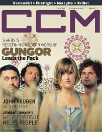

CCM Digital, Feb 2010
| Cover |
|---|
|  |
 Online Exclusively Online Exclusively |
| Writers in this Issue |
| Argyrakis, Andy Black, Beau Chismar, Janet Conner, Matt Greer, Andrew Swartzendruber, Jay |
Gungor
Cover Feature:- "Beautiful Sounds: 5 Artists Redefining Modern Worship" by Janet Chismar
- "John Reuben's Creative Self-Control" by Matt Conner
- "Two Is Better Than One" by Andrew Greermarried couples in Christian music: (Jeremy Camp & Adie Camp), (Bethany Dillon & Shane Barnard (Shane & Shane)), (Jeromy & Jenny Diebler (FFH)), (Francesca Battistelli & Matthew Godwin)
- "Picture This" by Jay SwartzendruberHelp-Portrait, Jeremy Cowart
- "In The Studio With..."
- "A Success Story: Skillet's "It Factor"" by Beau Black
- The Letter Black by Andy Argyrakis
- Luminate by Andy Argyrakis
- Fireflight by Andy Argyrakis
Relevant Links
For more information about CCM Digital visit .This issue is available exclusively online.
© 2011 CMnexus. Last updated September 2019. Contact: editor -AT- cmnexus -DØT- org About